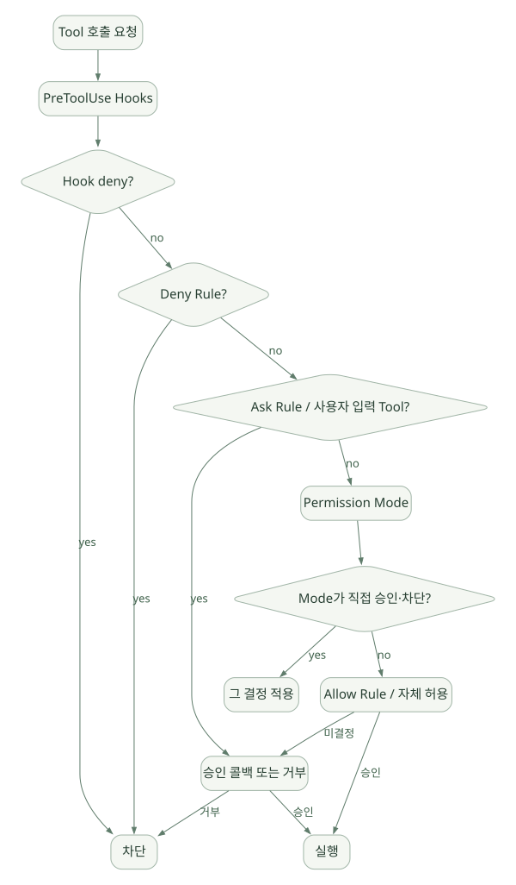

SECOND STUDY / Tool·MCP·권한·Hook
Tool·MCP·권한·Hook
이번 단원의 읽는 관점
모델 요청과 실제 부작용 시점을 나누고 내장·외부 MCP·Python MCP 경로를 연결합니다.
살펴볼 경계자동 승인·명시적 거부·Hook·콜백의 조건과 우회 가능한 경로를 확인하세요.
이 페이지의 세부 목차
Part III. 도구·MCP·권한·가드레일을 실제 실행 경계로 이해하기
13. Tool 호출은 모델 결정과 실행 결정을 분리해야 한다#
모델이 tool_use를 생성하는 순간과 실제 Tool의 부작용이 발생하는 순간은 다르다. Claude Code는 기본 도구 실행을 담당하고, 외부 MCP 서버는 별도 서비스에서 기능을 수행하며, Python SDK-hosted MCP는 Python 프로세스의 함수 핸들러를 이용한다. [DOC: D02, D07]
| 단계 | 담당 | 데이터 | 신뢰 경계 |
|---|---|---|---|
| Tool 선택 | Claude 모델 | Tool 이름·인수 후보 | 모델 출력을 신뢰하면 안 됨 |
| Tool 노출/검색 | CLI의 Tool catalog | 스키마·설명 | Tool registry 변경·context 비용 |
| 인수 확인 | CLI/실행 대상 | JSON Schema·관례 | 타입 검증만으로 의미·권한 보장 불가 |
| 정책·승인 | Permission Rules·Hooks·콜백 | 사용자/역할/경로/명령 | 하드 차단이 필요한 위치 |
| 실행 | 내장 Tool / 외부 MCP / Python SDK MCP | 파일·쉘·네트워크 접근 | OS·서버 IAM 권한이 최종 경계 |
| 결과 반환 | Tool host → CLI | Tool 결과·오류 | 결과 자체가 prompt injection 입구 |
| 후속 판단 | Claude 모델 | 증거·도구 출력 | 모델의 최종 답변도 검증 필요 |
13.1 실제 병렬 Tool 호출 규칙 [DOC]#
공식 Agent Loop 문서에서는 여러 Tool 요청 시 읽기 중심 Tool은 동시에 실행 가능하고, 상태를 수정하는 Tool은 충돌을 줄이기 위해 순차 처리할 수 있다고 설명한다. SDK MCP 커스텀 Tool은 기본적으로 순차 실행이며 readOnlyHint annotation으로 병렬 실행 허용을 나타낼 수 있다. 이 annotation은 Tool 제작자의 선언이므로 실제 부작용이 없는지 검증해야 한다. [D02]
운영 실패 예시: 실제로 파일을 쓰는 MCP Tool이 readOnlyHint=True로 설정되면, 동시에 여러 호출이 실행될 수 있어 데이터 경합이 발생한다. annotation만을 안전한 트랜잭션 보장으로 생각하면 안 된다.
13.2 단순한 Tool error와 권한 거부#
- Tool 실행 오류: 실행을 시도했지만 인수·네트워크·권한·프로세스 오류가 발생. 모델이 실패 결과를 보고 다른 경로를 선택할 수 있다.
- Permission deny: 실행 이전에 정책으로 차단. 보통 거부 사실이 Tool 결과로 모델에 전달된다.
- CLI 프로세스 오류: Tool 단위가 아니라 Agent 전체 실행 채널에 영향.
ProcessError,CLIConnectionError등을 구분해야 한다. - SDK MCP callback 오류: Python에서 예외가 발생하고 control protocol로 오류를 전달할 수 있다. 콜백 처리 도중 연결이 끊기면 결과 전달 자체도 실패할 수 있다.
14. SDK MCP의 JSON-RPC 통과 경로#
14.1 외부 MCP와 SDK-hosted MCP#
| 구분 | 외부 MCP 서버 | Python SDK-hosted MCP |
|---|---|---|
| Tool 구현 위치 | 독립 서버/별도 프로세스 | SDK를 사용하는 Python 프로세스 |
| 연결 | 표준 MCP transport | CLI ↔ SDK control protocol ↔ Python MCP handler |
| 자격증명 관리 | MCP 서버에 보관 가능 | SDK 프로세스 환경과 격리 설계 필요 |
| 장애 격리 | 별도 서비스 경계 | Python 앱 프로세스의 안정성에 영향 |
| 확장 | 원격 서버 독립 scale 가능 | 앱 worker와 함께 확장·수명 관리 |
구체적인 실행 경로 [SRC: C05]:
CLI가 MCP 도구 호출
↓
SDK 쪽으로 control_request(subtype='mcp_message', server_name, message)
↓
Query._handle_control_request(...)
↓
Query._handle_sdk_mcp_request(server_name, message)
↓
해당 Python MCP server의 JSON-RPC 핸들러 호출
↓
JSON-RPC response 또는 notification(no response)
↓
CLI로 control_response
↓
CLI가 Tool 결과를 모델에게 전달_handle_sdk_mcp_request가 JSON-RPC notification과 request의 응답 여부를 구분한다. JSON-RPC request에는 id가 있지만 notification에는 응답하지 않아야 한다. 응답 누락과 handler crash를 구분하는 것이 중요하다.
14.2 왜 SDK MCP를 직접 Function Tool이라고 부르면 안 되는가?#
다른 프레임워크의 @tool 함수는 Runner가 직접 Python callable을 호출할 수 있다. 반면 Claude Agent SDK에서는 CLI가 MCP Tool로 발견하고, control protocol을 거쳐 Python 코드가 수행된다. 결과적으로 Python 함수가 실행되는 것은 같아도 Tool dispatch 주체와 직렬화, 권한 검사, 프로세스 경계가 다르다.
14.3 Tool Handler의 장애 모델#
- Python MCP handler가 HTTP 또는 DB 응답을 기다리며 블록된다.
- CLI는 대응하는 control response를 기다린다.
- 앱이
interrupt()또는disconnect()를 시도한다. - 취소 협조가 되는 async callback은 중단될 수 있으나, 이미 OS thread 또는 외부 서비스에서 시작된 작업은 계속될 수 있다.
- 따라서 취소/timeout만으로 외부 DB transaction을 안전하게 rollback했다고 주장할 수 없다.
이것은 '정확히 한 번 실행(exactly-once)'을 SDK가 자동 보장하지 않는다는 핵심 설계적 결론이다. [SRC: C02; INF]
15. Permissions의 정확한 평가 순서#
공식 문서의 평가 단계는 단순히 allowed_tools에서 결정하지 않는다. 2026-10 기준 설명은 다음의 큰 순서다. [DOC: D03]
가로로 이동해서 읽을 수 있습니다. 도식 크게 보기 ↗

원문의 학습용 도식입니다. 연결 방향·분기 조건·점선·쌍방향 연결을 보존해 세로로 배치했습니다. 실제 구현·의사코드·해석의 구분은 본문을 함께 읽으세요.
도식 원문 보기 (Mermaid)
flowchart TD
A[Tool 호출 요청] --> B[PreToolUse Hooks]
B --> C{Hook deny?}
C -- yes --> X[차단]
C -- no --> D{Deny Rule?}
D -- yes --> X
D -- no --> E{Ask Rule / 사용자 입력 Tool?}
E -- yes --> I[승인 콜백 또는 거부]
E -- no --> F[Permission Mode]
F --> G{Mode가 직접 승인·차단?}
G -- yes --> H[그 결정 적용]
G -- no --> J[Allow Rule / 자체 허용]
J -- 승인 --> K[실행]
J -- 미결정 --> I
I -- 승인 --> K
I -- 거부 --> X실제 순서:
- Hook:
PreToolUse가 차단 또는 수정·허용을 결정할 수 있다. 허용 결과라도 후속 Deny/Ask 평가를 건너뛰지 않는다. - Deny rules:
disallowed_tools및 정책 파일의 Deny. 매칭되면can_use_tool은 호출되지 않는다. - Ask rules: 설정 파일의 Ask,
AskUserQuestion같은 사용자 입력 Tool, 특정 MCP 상호작용 요구 등은 승인 경로로 연결된다. - Permission mode:
bypassPermissions,acceptEdits,plan,dontAsk,auto등 모드에 따라 직접 결정할 수 있다. - Allow rules / 자체 허용:
allowed_tools와 설정 Allow, 기본 읽기 작업의 허용 조건 등을 처리한다. can_use_toolcallback: 앞 단계에서 결정되지 않은 호출을 앱에 질문한다. 어떤 모드에서는 호출되지 않는다.
정책 파일·플러그인 Mod의 영향과 critical path 예외가 존재한다. 위 흐름은 사용자 발표용 핵심 경로를 설명한 것이므로 모든 edge case를 단순화한 완전한 보안 상태 기계라고 해석하면 안 된다. [D03]
15.1 allowed_tools가 whitelist가 아닌 이유#
allowed_tools=['Read']는 기본적으로 Read를 자동 승인하도록 하는 규칙이지 다른 모든 Tool을 환경에서 제거하는 조치가 아니다. 미등록 Tool이 여전히 모델에 노출될 수 있으며, 다른 Permission mode나 callback의 허용 경로를 통해 실행될 수 있다. 노출·실행 제한을 다루는 옵션은 tools, disallowed_tools, Subagent별 Tool scope, Sandbox, OS 권한 등과 구분해야 한다. [DOC: D03, D02]
15.2 can_use_tool이 모든 호출에 적용되지 않는 이유#
allowed_tools, Permission mode 등이 앞에서 승인했다면 can_use_tool은 실행되지 않을 수 있다. 이는 콜백이 '전역 보안 필터'가 아니기 때문이다. 필수 차단 규칙은 Deny, 실행 전 Hook, Tool implementation 또는 외부 권한 경계에 두어야 한다. bypassPermissions나 dontAsk에서 callback 호출 범위가 더욱 달라질 수 있다. [D03]
15.3 bypassPermissions도 OS 권한을 무효화하지 않는다#
이 모드는 CLI의 사용자 승인 규칙을 크게 완화하지만 파일 시스템 권한, 컨테이너 격리, 네트워크 정책, MCP 서버 IAM의 실제 enforcement를 제거하지 않는다. '승인 없음'과 '무제한 OS 권한'은 같은 말이 아니다. 또한 공식 문서에는 일부 critical-path 관련 예외가 남아 있다. [D03]